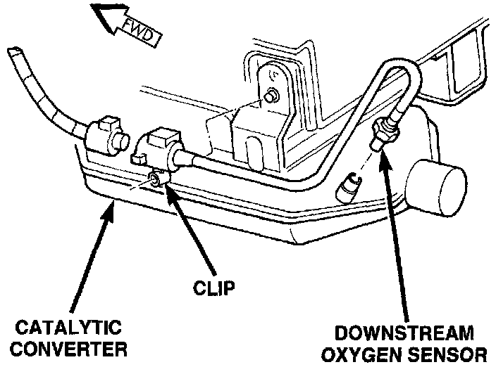
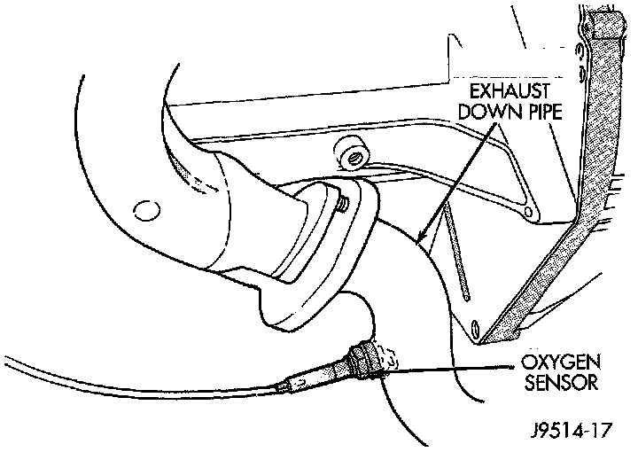

Oxygen Sensor: Service and Repair
Fig. 81 Downstream O2S - All:

Fig. 82 Upstream O2S - 4.0:

The upstream O2S sensor is located in the exhaust downpipe. The downstream sensor is located near outlet end of catalytic converter.
REMOVAL
WARNING: The exhaust manifold, exhaust pipes and catalytic converter become very hot during engine operation. Allow engine to cool before removing oxygen sensor.
1. Raise and support vehicle.
2. Downstream Sensor Only: Disconnect O2S wiring connector clip (Fig. 81) at body. Remove clip from O2S electrical connector and discard.
3. Disconnect O2S pigtail harness wire connector from main connector.
CAUTION: When disconnecting the sensor electrical connector, do not pull directly on wire going into sensor.
4. Remove 025 sensor. Snap-On oxygen sensor wrench (number YA 8875) may be used for removal and installation.
INSTALLATION
NOTE: Threads of new oxygen sensors are factory coated with anti-seize compound to aid in removal. DO NOT add any additional anti-seize compound to the threads of a new oxygen sensor.
1. Install the O2S sensor. Tighten to 30 Nm (22 ft. lbs.) torque.
2. Connect O2S sensor wire connector to main wiring harness.
3. Downstream Sensor Only: Install new wiring connector clip into O2S electrical connector. Snap this clip to body. The O2S pigtail harness must be clipped to body to prevent mechanical damage from driveshaft.
4. Lower the vehicle.